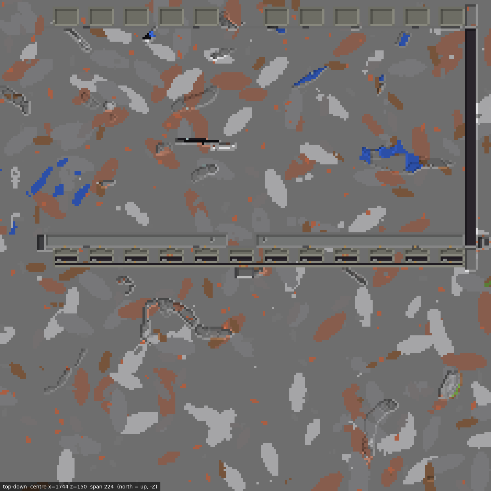
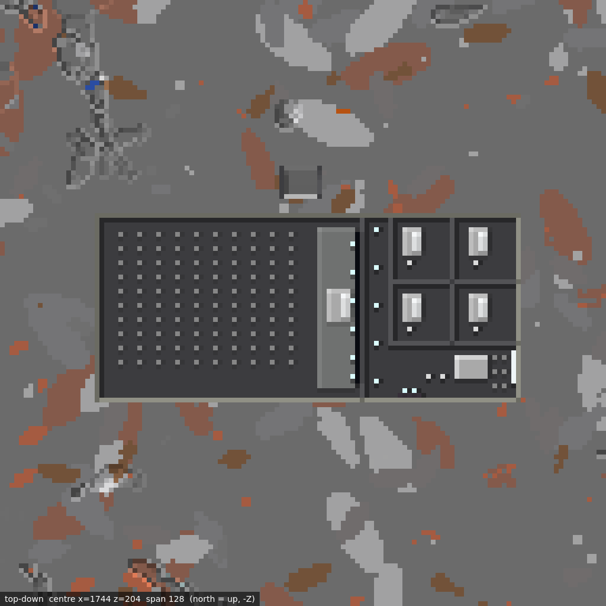

Masterplan 05 · Combined Zones · As-built supplement
The Empty Eight public-retail round
A clean, lit, dystopian vacant-retail gallery is now open for bounded public exploration. Its maintained back-of-house and the deeper theatre/private-club annex remain secured, restricted, and non-public.
Public gallery
R08AL opens exact bays EE-R-S01…S05 and EE-R-S07…S12. Each is vacant, clean, lit, and publicly viewable through a 4×2 opening. Eleven manual smoke doors retain the bounded interior separation. No tenant, commerce, occupant, NPC, or entity has been installed.
EE-R-S06 and the complete north row remain capped. The two public stairs are bounded internal exploration routes from PF08, not a claim of surface egress or accessibility.

Y=40…51, rendered from the accepted R08AM post. The public claim applies only to the eleven south gallery bays; the rear BOH remains restricted.Maintained restricted back-of-house
The completed BOH has twelve maintained rooms and a continuous 372-cell service spine. Only two marked staff/service doors lead from public gallery space. Twelve secured internal room doors keep the service area non-public; twelve warm lights and 24 booth seats support the static fit-out. No entities were introduced.
Restricted lower annex
R08AM adds a secured seven-wide grand stair descending 25 blocks from the BOH. The lower annex contains a 100-seat theatre and a separate private-club wing. The wing has four consensual adults-only restricted suites, a communal lounge, two simulated fireplaces, two non-explicit swing seats, billiards, and a six-seat cinema.
The presentation is non-explicit. There is no active fire, no occupant or NPC, and no depiction of anatomy, sex acts, coercion, confinement, or violence. The annex is not public.

Y=24…34. Left: theatre and seating field. Right: restricted private-club rooms and lounge. This image is not a public-access or public-media claim.Evidence and exactness
| Release | Accepted evidence | Exact result |
|---|---|---|
| R08AL | PASS_PUBLIC_VACANT_RETAIL_AND_RESTRICTED_BOH_COMMISSIONEDpayload 68e7fe9a739c03e1aa98b21abecfa4c33978844bb1cb187fd9cdcb0fc4b76142 | 9,647 final states; 8,553 changes; zero halo/retained drift; 8,553 rollback guards |
| R08AM | PASS_RESTRICTED_THEATRE_PRIVATE_CLUB_ANNEX_COMMISSIONEDpayload d2272bdc12ce1bf4831a406d10385a28e2e32c4b4460436c3a30333186d7243a | 44,783 final states; 44,366 changes; exact eight-cell R08AL seam; zero off-seam/halo drift; 44,366 rollback guards |
Retained closed interfaces
S06, every north bay, and the N06 source-physics exception remain capped or untouched.- Future rail stubs remain closed; no public, passenger, or full-guideway transport is claimed.
- Drainage, fire/service, ventilation, utility, and mechanism interfaces remain closed.
- No exterior discharge, surface egress, or accessibility claim is created.
Accepted physical identity
Post snapshot: data/worldsnap-r08am-post-20260822T161818Z
Complete-save SHA-256: 0bcbba4fad530b8a5c22bbef295978cc4864270de652acba18372e445b584699
Region SHA-256: 30f5c3394c4080d74156a59deb613290366c130e72a859261625117b8276541f
Completed release identity: 0a727398d1dd0677e55702a22c4571d8fe980bd3fc392a948b67031ffd4d4205